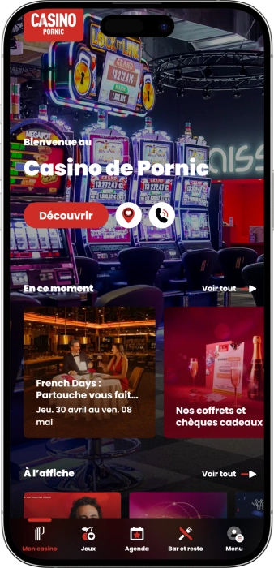
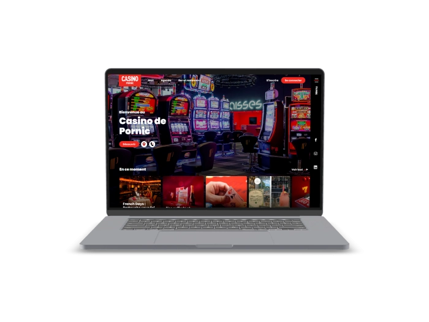

Offre de bienvenue exclusive de
Offre de bienvenue exclusive de
Votre Casino de Référence sur la Côte de Jade
Top casinos
Détails du bonus
Casino
Bonus
Note
Tours gratuits
Plus d'infos
Obtenir
Avantages
- Vous cherchez un casino de confiance à Pornic, en Loire-Atlantique ? Nous opérons sous l'autorité de l'ANJ, avec des équipements certifiés, des jackpots progressifs Mégapot et une équipe dédiée 7j/7. Voici pourquoi nous sommes le choix privilégié des joueurs de la Côte de Jade :
-
164 machines à sous dernière génération avec jackpots Mégapot connectés
-
7 tables de jeux : Roulette Anglaise, Blackjack, Ultimate Poker certifiés ANJ
-
Poker Room avec Texas Hold'em et cash games dès 2-4 blinds chaque soir
-
Programme de fidélité Players Plus du Groupe Partouche — 44 casinos en Europe
-
Restaurant panoramique bistronomique et bar sur le port de Pornic
-
Salle de spectacle 950 places & événements exclusifs toute l'année
- Rejoignez des milliers de joueurs satisfaits qui font confiance à notre établissement certifié, situé au cœur de Pornic. Notre équipe francophone est à votre disposition 7j/7 pour une expérience inoubliable sur la Côte de Jade.
Casino Partouche Pornic App



Notre Histoire à Pornic
Au cœur de Pornic, en Loire-Atlantique, nous accueillons nos visiteurs dans un espace de 2 000 m² face à la Ria. Membre du Groupe Partouche, leader européen depuis plus de 50 ans, nous proposons jeux, restauration et spectacles.
- Intégration au Groupe Partouche, leader de 44 casinos en Europe
- Installation de 164 machines à sous avec technologie Mégapot
- Ouverture de la Poker Room avec cash games et tournois réguliers
- Certification ANJ et mise en place du programme Players Plus
Nous opérons sous la licence de l'ANJ (Autorité Nationale des Jeux), garantissant équité et sécurité à 100%. Nos machines sont auditées régulièrement. Chaque transaction est protégée par chiffrement SSL 256-bit.

Nous continuons d'enrichir notre offre pour les joueurs de Pornic et de la Côte de Jade. Notre engagement pour le jeu responsable reste notre priorité absolue. Venez nous rendre visite et vivez une soirée exceptionnelle face à l'océan !
Nos Jeux de Casino à Pornic
L'Univers Complet des Jeux au Casino Partouche de Pornic
Bienvenue dans notre espace de jeux de 800 m², situé au 30 Rue du Canal à Pornic, en Loire-Atlantique. Notre casino vous propose une sélection complète d'équipements de divertissement certifiés par l'ANJ (Autorité Nationale des Jeux), allant des machines à sous dernière génération aux tables de jeux traditionnels, en passant par une Poker Room animée et des postes électroniques innovants. Que vous soyez un habitué de la Côte de Jade ou un visiteur de passage sur la commune balnéaire de Pornic, vous trouverez chez nous un environnement sécurisé, convivial et parfaitement équipé pour une soirée mémorable. Notre parc de jeux figure parmi les plus complets des casinos régionaux du Pays de la Loire, combinant diversité, modernité et atmosphère intimiste appréciée de tous nos joueurs.
Nos Machines à Sous : 164 Appareils Dernière Génération
Notre salle de machines à sous est le cœur de notre établissement, avec 164 appareils certifiés et régulièrement mis à jour. Vous y trouvez des machines à rouleaux mécaniques, des rouleaux vidéo et des postes de vidéo poker, avec des mises allant de 0,01 € à 5 €, accessibles à tous les budgets. Une particularité dont nous sommes particulièrement fiers : plusieurs de nos machines sont équipées de la technologie Mégapot, le système de jackpots progressifs du Groupe Partouche qui connecte plus de 200 machines à sous à travers toute la France, permettant à nos joueurs de concourir pour des gains cumulés considérables. C'est une exclusivité que peu de casinos de la région Loire-Atlantique peuvent offrir à leurs visiteurs.
- Rouleaux mécaniques : Machines classiques à rouleaux physiques, avec mises de 1 € à 5 €, idéales pour les amateurs de sensations authentiques et de gameplay traditionnel.
- Rouleaux vidéo : Machines modernes à écran tactile dès 0,01 € la mise, proposant une multitude de thèmes (aventure, mythologie, fruits, cinéma) avec bonus, free spins intégrés et animations haute définition.
- Vidéo poker : Postes dédiés au poker électronique avec mises de 0,01 € à 5 €, proposant les variantes classiques Jacks or Better, Deuces Wild et Double Bonus Poker pour les stratèges.
- Jackpots Mégapot : Réseau exclusif Groupe Partouche reliant plus de 200 machines en France, offrant des jackpots progressifs parmi les plus importants des casinos terrestres français.
- Terrasse couverte : Unique dans la région, notre terrasse couverte offre une vue imprenable sur la Ria de Pornic tout en profitant de vos jeux préférés — une expérience exclusive en Loire-Atlantique.
Tables de Jeux Traditionnels : L'Élégance du Casino Classique
Notre salon dédié aux jeux de table, situé à l'étage de notre établissement de Pornic, ouvre ses portes chaque soir à 20h30 pour accueillir les amateurs de jeux classiques dans un cadre raffiné. Nous proposons 7 tables certifiées ANJ, animées par des croupiers professionnels formés aux standards du Groupe Partouche. La roulette anglaise, le blackjack et l'Ultimate Poker constituent le socle de notre offre, avec des mises adaptées à tous les profils de joueurs. Chaque table respecte strictement les règles homologuées par l'Autorité Nationale des Jeux, garantissant une équité totale et une transparence absolue pour nos visiteurs de la Côte de Jade et de toute la région Pays de la Loire.
- Roulette Anglaise (1 table) : La reine des jeux de casino, disponible dès 1 € la mise. Profitez de l'ambiance authentique d'une roulette traditionnelle avec croupier en chair et en os, dans notre salon feutré au cœur de Pornic.
- Blackjack (3 tables) : Nos trois tables de blackjack accueillent les joueurs dès 5 € la mise, avec des règles classiques homologuées ANJ. Le blackjack à 21 points reste l'un des jeux offrant le meilleur taux de retour aux joueurs parmi tous les jeux de table.
- Ultimate Poker (1 table) : Variante populaire du poker de casino, jouable dès 2 €, combinant stratégie et chance contre le croupier sans confrontation entre joueurs — parfaite pour les débutants comme pour les habitués.
- Jeux électroniques de table : 38 postes de Roulette Électronique et 7 postes de Blackjack Électronique, permettant de jouer à votre rythme avec les mêmes règles ANJ mais dans un format numérique confortable et accessible.
Pourquoi Choisir Nos Tables de Jeux à Pornic ?
Nos tables offrent l'expérience authentique d'un casino terrestre certifié, dans un cadre soigné et une atmosphère chaleureuse typique de la Côte de Jade. Contrairement aux plateformes en ligne, jouer chez nous à Pornic signifie profiter d'une interaction humaine réelle, de croupiers expérimentés et d'une ambiance sociale unique. L'ouverture à 20h30 tous les jours permet de combiner votre soirée casino avec notre restaurant bistronomique panoramique, pour une expérience complète en Loire-Atlantique. Nos clients réguliers apprécient particulièrement la convivialité de notre salon de jeux, où l'ambiance reste intimiste et accueillante, loin des grands complexes impersonnels des métropoles.
Notre Poker Room : La Référence du Poker à Pornic
Notre Poker Room est un espace dédié aux amateurs de poker de la région Pornic et de toute la Loire-Atlantique. Elle propose des cash games en Texas Hold'em avec des blinds à 2-4 € et une cave minimum, animés principalement en soirée lorsque l'atmosphère du casino atteint son intensité maximale. La Poker Room est gérée selon les standards du Groupe Partouche, avec des règles précises, des tables bien entretenues et des superviseurs formés pour garantir un jeu équitable. Des tournois de poker sont également organisés régulièrement, attirant les joueurs de Pornic, de Nantes et de tout le Pays de la Loire pour des soirées compétitives et conviviales.
- Texas Hold'em Cash Game : Parties à blinds 2-4, accessibles aux joueurs expérimentés comme aux amateurs motivés. Ambiance détendue et professionnelle dans notre Poker Room dédiée à Pornic.
- Tournois de poker réguliers : Événements compétitifs organisés tout au long de l'année, attirant la communauté des joueurs de Loire-Atlantique avec buy-ins adaptés à tous les niveaux.
- Supervision professionnelle : Encadrement par des superviseurs certifiés Partouche garantissant équité, respect des règles et bonne ambiance à chaque session de jeu.
Les Jeux Électroniques : Innovation et Accessibilité
En complément de nos machines à sous et tables traditionnelles, notre casino de Pornic dispose de 62 postes de jeux électroniques, offrant une alternative moderne et accessible aux jeux classiques. Les 38 postes de Roulette Électronique permettent de retrouver toutes les sensations de la roulette à son propre rythme, sans pression, avec des mises flexibles. Les 7 postes de Blackjack Électronique sont idéaux pour s'exercer aux stratégies de base avant de rejoindre les tables traditionnelles. Nos 6 postes de Bingo électronique complètent cette offre diversifiée, apportant une touche de convivialité et de simplicité appréciée des visiteurs de tous âges qui fréquentent notre établissement en Loire-Atlantique.
| Jeu | Mise min. | Mise max. |
|---|---|---|
| Rouleaux vidéo | 0,01 € | 5 € |
| Rouleaux mécaniques | 1 € | 5 € |
| Vidéo Poker | 0,01 € | 5 € |
| Roulette Anglaise | 1 € | — |
| Blackjack | 5 € | — |
| Ultimate Poker | 2 € | — |
| Texas Hold'em | Blinds 2-4 € | — |
Venez Vivre l'Expérience Casino à Pornic
Notre casino, membre du réseau Groupe Partouche fort de 44 établissements en France, en Suisse, en Belgique et en Tunisie, vous garantit des standards de qualité irréprochables à chaque visite. Situé au 30 Rue du Canal à Pornic, à deux pas du port et de l'océan Atlantique, notre établissement est ouvert tous les jours de 10h à 3h du matin, avec les tables de jeux disponibles à partir de 20h30. Que vous soyez un résident de Pornic ou un visiteur de la Côte de Jade souhaitant combiner thalassothérapie, gastronomie et casino, nous vous accueillons dans un cadre unique et sécurisé. Rejoignez notre programme Players Plus pour accumuler des points à chaque visite et profiter d'avantages exclusifs dans l'ensemble de nos établissements Partouche en France.
Fournisseurs de logiciels
Services & Programme de Fidélité
Restauration, Spectacles et Programme Players Plus à Pornic
Notre casino de Pornic ne se limite pas aux jeux : nous sommes un véritable complexe de divertissement de 2 000 m² proposant une expérience globale et inoubliable sur la Côte de Jade. Au-delà de notre espace de jeux de 800 m², nous mettons à votre disposition un restaurant bistronomique panoramique, un bar convivial, une salle de spectacle de 950 places et des espaces pour vos événements privés ou professionnels. Toutes ces prestations sont gérées selon les standards du Groupe Partouche, leader européen des casinos depuis plus de cinq décennies avec 44 établissements en France, Suisse, Belgique et Tunisie. Que vous soyez à Pornic pour le week-end, en villégiature estivale sur l'Atlantique ou en déplacement professionnel en Loire-Atlantique, notre établissement s'adapte à toutes vos envies et à tous vos budgets.
Notre Restaurant Bistronomique : Saveurs et Vue sur le Port de Pornic
Notre restaurant bistronomique vous accueille dans un cadre panoramique avec vue sur le port de Pornic et la Ria, pour une expérience gastronomique aussi séduisante que notre salle de jeux. La cuisine bistronomique que nous proposons allie la générosité du bistrot traditionnel français à la créativité et à l'exigence de la gastronomie contemporaine, avec des produits frais sélectionnés auprès de producteurs locaux de Loire-Atlantique. En semaine, nous gâtons nos joueurs avec un petit-déjeuner, des pâtisseries et des sandwichs offerts en salle, une attention particulière que nous réservons à nos habitués fidèles. Le soir, le restaurant se transforme pour les dîners-spectacles et les soirées à thème qui rythment notre calendrier d'événements tout au long de l'année à Pornic.
- Cuisine bistronomique : Menu élaboré à partir de produits locaux de Loire-Atlantique, alliant tradition française et créativité contemporaine pour des repas d'exception face à l'Atlantique.
- Avantages joueurs en semaine : Petit-déjeuner, pâtisseries et sandwichs offerts aux joueurs présents en salle — une attention exclusive de notre casino de Pornic pour récompenser votre fidélité.
- Dîners-spectacles : Soirées combinant gastronomie et divertissement scénique, organisées régulièrement dans notre salle de spectacle de 950 places — une exclusivité de notre complexe à Pornic.
- Bar casino : Notre bar vous propose cocktails, vins et boissons dans une ambiance détendue, idéal pour une pause conviviale entre deux sessions de jeux sur la Côte de Jade.
Salle de Spectacle 950 Places : Le Divertissement à Pornic
Notre salle de spectacle de 950 places est l'une des plus grandes de la région Loire-Atlantique en dehors des grandes agglomérations, positionnant notre casino de Pornic comme un acteur culturel incontournable de la Côte de Jade. Nous accueillons tout au long de l'année les plus grands noms du spectacle vivant : humoristes, chanteurs, groupes de musique, one-man-shows et soirées thématiques à travers un programme varié qui se renouvelle chaque saison. Les billets sont disponibles directement sur notre site et à la caisse de notre casino au 30 Rue du Canal à Pornic. Que vous soyez amateur de variété française, de jazz, de comédie ou de spectacles familiaux, notre agenda culturel vous réserve toujours une surprise digne de la réputation du Groupe Partouche.
- Concerts et artistes : Programmation régulière d'artistes nationaux et régionaux, de la chanson française au rock, en passant par le jazz et les musiques du monde — une richesse culturelle rare à Pornic.
- Spectacles d'humour : Soirées one-man-show avec les humoristes les plus populaires du moment, pour des fous-rires garantis dans notre salle de 950 places face au port de Pornic.
- Soirées à thème : Événements spéciaux déguisés, soirées années 80, galas d'automne, réveillons… Notre équipe crée des expériences uniques pour nos clients de Loire-Atlantique et de toute la région.
- Réservation en ligne : Consultez notre agenda sur casino-pornic.partouche.com et réservez vos places directement depuis chez vous, en toute simplicité et sans file d'attente.
Programme Players Plus : Vos Points, Vos Avantages
Notre programme de fidélité Players Plus, développé par le Groupe Partouche, est l'un des systèmes de récompenses les plus avantageux des casinos terrestres français. Gratuit et accessible dès votre première visite au casino de Pornic, il vous permet d'accumuler des points à chaque session de jeu — machines à sous, tables de jeux, Poker Room — puis de les convertir en avantages concrets : réductions au restaurant, invitations à des événements exclusifs, accès prioritaire aux spectacles et bien plus encore. La grande force du programme Players Plus est son réseau : vos points sont valables dans les 44 casinos du Groupe Partouche à travers la France, la Suisse, la Belgique et la Tunisie, ce qui en fait une carte de fidélité véritablement européenne pour les joueurs de la Côte de Jade et au-delà.
- Accumulation de points : Gagnez des points à chaque euro joué sur nos machines à sous, tables traditionnelles et postes électroniques à Pornic, puis utilisez-les dans tout le réseau Partouche.
- Statuts progressifs : Plus vous jouez, plus votre statut évolue (Silver, Gold, Platinum…), débloquant des avantages croissants : petits-déjeuners offerts, invitations VIP, offres personnalisées en Loire-Atlantique.
- Réseau de 44 casinos : Vos points Players Plus vous accompagnent partout en France et en Europe, utilisables dans l'ensemble des établissements Partouche — un avantage unique pour les voyageurs.
- Offres exclusives joueurs : Promotions personnalisées envoyées régulièrement par email : tournois de poker spéciaux, soirées casino privées, remises au restaurant bistronomique de Pornic.
Espaces Professionnels et Événementiels
Notre casino de Pornic met à disposition deux salles de réunion modulables et une salle de sous-commission, parfaites pour l'organisation de séminaires d'entreprise, de conférences régionales ou d'événements privés en Loire-Atlantique. Ces espaces bénéficient de toute l'infrastructure logistique et technologique de notre établissement, ainsi que de l'expertise de notre équipe événementielle formée par le Groupe Partouche. Combiner un séminaire professionnel avec une soirée casino privée est une formule très appréciée des entreprises de Nantes et du Pays de la Loire qui cherchent à récompenser leurs équipes dans un cadre original en bord d'Atlantique. Contactez notre équipe au +33 2 40 82 26 87 pour obtenir un devis personnalisé et découvrir nos formules clés en main pour groupes à Pornic.
Sécurité, Jeu Responsable et Conformité ANJ
La sécurité de nos joueurs et leur bien-être sont au cœur de notre mission au Casino Partouche de Pornic. Nous opérons en totale conformité avec les réglementations imposées par l'ANJ (Autorité Nationale des Jeux), le régulateur officiel des jeux d'argent en France. Tous nos équipements font l'objet de contrôles réguliers et d'audits indépendants pour garantir l'équité des jeux et la protection des joueurs. Nous proposons des outils concrets de jeu responsable : possibilité d'auto-exclusion volontaire, limites de temps de jeu, informations sur les risques du jeu excessif et orientation vers des organismes d'aide reconnus. Notre personnel est formé pour détecter les signes de jeu problématique et intervenir avec bienveillance. À Pornic, comme dans tous les casinos du Groupe Partouche, jouer doit rester un plaisir.
| Service | Détails | Horaires |
|---|---|---|
| Machines à sous | 164 appareils | 10h – 3h |
| Tables de jeux | 7 tables ANJ | 20h30 – 3h |
| Poker Room | Texas Hold'em | Soir |
| Restaurant | Bistronomique | Déj. & Dîner |
| Spectacles | Salle 950 places | Selon agenda |
| Salles réunion | 2 salles privées | Sur réservation |
Accès et Informations Pratiques — Casino de Pornic
Notre casino est idéalement situé au 30 Rue du Canal, à Pornic (44210), accessible depuis Nantes en empruntant l'A11 puis la direction Aéroport Nantes Atlantique et la sortie vers Pornic en longeant la Côte de Jade. Un parking est disponible à proximité immédiate de notre établissement pour un accès facile. Pour toute question sur nos événements, réservations au restaurant ou renseignements sur le programme Players Plus, notre équipe est joignable au +33 2 40 82 26 87. Vous pouvez également consulter notre agenda complet et réserver en ligne sur casino-pornic.partouche.com. Nous vous attendons chaque jour de 10h à 3h du matin pour vous offrir le meilleur de l'expérience casino terrestre en Loire-Atlantique.
FAQ
Nous proposons 164 machines à sous, 7 tables de jeux (Roulette Anglaise, Blackjack, Ultimate Poker), 62 postes électroniques et une Poker Room Texas Hold'em. Toutes nos tables ouvrent à 20h30, certifiées ANJ. Les machines sont accessibles dès 10h chaque jour à Pornic.
Notre casino de Pornic est ouvert tous les jours de 10h à 3h du matin. L'espace machines à sous et jeux électroniques est accessible dès 10h. Les tables de jeux traditionnels et la Poker Room ouvrent chaque soir à 20h30, y compris les week-ends et jours fériés.
Le programme Players Plus est gratuit et disponible dès votre première visite à Pornic. Vous accumulez des points à chaque partie jouée, convertibles en avantages : repas, invitations, offres exclusives. Vos points sont valables dans les 44 casinos Partouche en France et en Europe.
Oui, nous opérons sous la licence de l'ANJ (Autorité Nationale des Jeux), le régulateur officiel des jeux d'argent en France. Tous nos équipements sont audités régulièrement. Nos transactions et données personnelles sont protégées par chiffrement SSL 256-bit, selon les standards du Groupe Partouche.
Oui, notre restaurant bistronomique panoramique avec vue sur le port de Pornic vous accueille pour déjeuner et dîner. En semaine, petit-déjeuner, pâtisseries et sandwichs sont offerts aux joueurs en salle. Des dîners-spectacles sont organisés régulièrement dans notre salle de 950 places.
Pour organiser un séminaire, événement privé ou soirée de groupe à Pornic, contactez notre équipe au +33 2 40 82 26 87. Nous disposons de 2 salles de réunion modulables et d'une salle de sous-commission. Nos formules clés en main sont idéales pour les entreprises de Loire-Atlantique.
Notre casino est situé au 30 Rue du Canal, 44210 Pornic. Depuis Nantes, empruntez l'A11 puis dirigez-vous vers l'Aéroport Nantes Atlantique et suivez les indications pour Pornic sur la Côte de Jade. Un parking est disponible à proximité immédiate de notre établissement.
Nous proposons des jackpots progressifs via la technologie Mégapot du Groupe Partouche, qui connecte plus de 200 machines à sous à travers toute la France. Ce réseau exclusif permet d'accumuler des cagnottes importantes, offrant à nos joueurs de Pornic les plus grandes chances de gain.